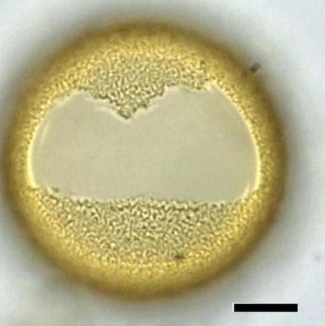

CYSTS LIST
- Alexandrium
- Archaeperidinium/RBSC
- Brigantedinium/Protoperidinium
- Diplopsalopsis/Protoperidinium
- Dubridinium
- Gymnodinium
- Impagidinium
- Lejeunecysta
- Nematosphaeropsis
- Peridinioids
- Polykrikos
- RBSC/Protoperidinium
- Selenopemphix
- Spiniferites
- Stelladinium
- Transparent/Hollow
- Transparent/Solid
- Transparent/Spherical
- Trinovantedinium
- Votadinium
TRANSPARENT SPHERICAL CYSTS COMPARATION
Innerlayer |
Outerlayer/Processes |
Remarks |
Shape |
Species |
Central body (um.) |
Image |
SmoothSolid wall |
MicrogranularLoose |
Funnel-shapedInvaginations opened |
Spherical to broadly elongate |
Ataxiodiniumchoane | 26 to 37 (D) |
|
Smooth endoblast |
Smooth to fainly granulateperiblast |
Funnel-shapedInvaginations restricted |
Ovoid |
Ataxiodiniumzevenboomii | 27 to 34 (e)31 to 38 (p) |
|
TransparentSpongy |
Fibers5 to 11 um. |
Longer fibers beyond densely fibrous layer |
Spherical to subsphericalWall thickness: 1.5 to 3.5 |
Bitectatodiniumspongium | 48 to 63 (D) |
|
TransparentSmooth |
LamellaeFew um. |
Densely vermiculate processesAngular archeopyle |
SphericalSmall protuberance may be present |
Bitectatodiniumtepikiense | 42 to 56 (D) |
 |
TransparentSmooth |
Irregularmicroreticulation |
Irregular reticulationPrecingular archeopyle |
SphericalSmall apical protuberance |
Pyxidinopsisbraboi | 40 (D) |
|
Transparent |
Psilate |
Thin wallCruciform shapePrecingular archeopyle |
Sphericalto cruciform |
Pyxidinopsispsilata | 37 to 52 (D) |
|
TransparentSmooth |
Reticulation of low muri. |
Lesser reticulation of muriCentral body size |
Subsphericalto ovoid |
Pyxidinopsisreticulata | 28 to 40 (D) |
|
TransparentStriated |
Two types of muri |
More pronounced inner reticulation |
Subspherical |
Pyxidinopsisreticulatavar. okhotsk | 35 to 40 (D) |
|
TransparentThick spongy |
Dense sinuousprojecting fibrils |
Thick wallPrecingular archeopyle |
Subsphericalto ovoidal |
Tectatodiniumpellitum | 32 to 53 (D) |
|
TransparentSmooth |
Undulating layer |
Shorter central body and processes |
Ovoidal |
Scrippsiellatriffida | 29 to 41 (D) |